<!DOCTYPE html>
<html lang="pt-BR">

<head>
    <meta charset="UTF-8">
    <meta http-equiv="X-UA-Compatible" content="IE=edge">
    <meta name="viewport" content="width=device-width, initial-scale=1.0">
    <title>Lumen</title>
    <link rel='stylesheet' type='text/css' href='./css/style.css' />
    <link rel='stylesheet' type='text/css' href='./css/global.css' />
</head>

<body>
    <main>
        <div class="body">
            <div class="main">
                <div class="section">

                    <div class="content-fullwidth-area">
                        <div class="titulo-cap-section">
                            <div class="cap-section">
                                <span class="cap-texto">Capítulo</span>
                                <p class="cap-number">
                                    3
                                </p>
                            </div>
                            <div class="titulo-cap-background">
                                <h1 class="título-cap">
                                    Procariontes e bacterioses
                                </h1>
                            </div>
                        </div>
                        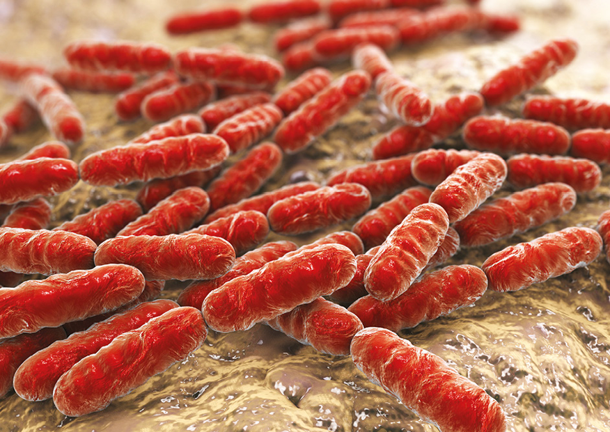
                    </div>

                    <!-- home -->
                    <div class="text-content-area">
                        <p class="img-subtitle">
                        </p>
                        <p class="img-credit">
                            Representação esquemática em 3D de lactobacilos (cerca de 1µm de comprimento).
                        </p>
                        <p class="general-text">
                            Procariontes podem ser considerados os organismos mais bem-sucedidos do planeta, se o critério de avaliação for número de organismos e diversidade por hábitats ocupados. Eles possuem uma célula simples, denominada célula procariótica, mas apresentam uma
                            grande diversidade metabólica, resultado da evolução dos procariotos no planeta ao longo de bilhões de anos. Atualmente, sabemos que os procariotos não formam um grupo natural, mas pertencem a dois domínios distintos: Bacteria
                            e Archaea. As bactérias são exemplos de procariotos fundamentais ao planeta e ao ser humano, porém algumas são causadoras de doenças humanas. Os lactobacilos, ilustrados na imagem de abertura, por exemplo, são bactérias intestinais
                            que podem ser utilizadas como probióticos na produção de iogurtes, tendo grande importância para o bom funcionamento do intestino humano. Dessa forma, o estudo dos procariontes é de fundamental interesse para a humanidade,
                            uma vez que esses organismos desempenham papel de destaque na ecologia, na economia e saúde humana. Esse será o principal tema abordado neste capítulo.


                            <!-- bullet and boxe-2 -->
                            <div class="text-content-area">
                                <!-- bullet -->
                                <div class="bullet-list-section">
                                    <ul class="bullet-list">
                                        <li class="general-text">
                                            O que é uma célula procariótica?
                                        </li>
                                        <li class="general-text">
                                            Por que os procariotos pertencem, atualmente, a dois domínios distintos?
                                        </li>
                                        <li class="general-text">
                                            Cite três doenças humanas causadas por bactérias.
                                        </li>
                                    </ul>
                                </div>
                                <!--boxe-2  -->
                                <div class="boxe-06-02-cie">
                                    
                                    <p class='chapter-description'> Neste capítulo serão abordadas as habilidades
                                        <span class='boxe-06-texto'>
                        EM13CNT202
                      </span>,
                                        <span class='boxe-06-texto'>
                        EM13CNT301
                      </span>,<span class='boxe-06-texto'>
                        EM13CNT304
                      </span>,<span class='boxe-06-texto'>
                        EM13CNT306
                      </span>e<span class='boxe-06-texto'>
                        EM13CNT310
                      </span>
                                    </p>
                                </div>
                            </div>


                            <div class="titulo1-section">
                                
                                <h3 class="titulo1">Classificação dos procariontes
                                </h3>
                            </div>
                            <p class="general-text">Os cientistas acreditam que os procariontes foram os primeiros habitantes da Terra. <br> Todos os organismos procariontes possuem célula procariótica (do grego pro e karyon, que significam, respectivamente, “antes” e “núcleo”),
                                critério que fez com que esses organismos fossem antes classificados no mesmo reino, denominado Monera. Com base em estudos moleculares, Carl Richard Woose (1928-2012) e seus colaboradores propuseram, em 1990, uma categoria
                                taxonômica superior ao reino, dividindo os seres vivos em três domínios: Bacteria, Archaea e Eukarya. Nesta proposta de três domínios, as arqueas estão mais relacionadas aos eucariontes, pois possuem um ancestral comum
                                mais recente do que com as bactérias</p>


                            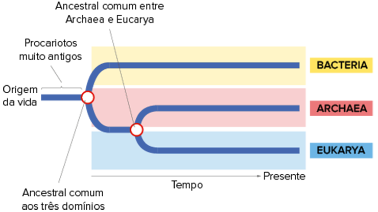
                            <p class="img-credit">Fonte: SADAVA, D. et al. Vida: a ciência da Biologia. São Paulo: Artmed, 2009. <br> Cladograma que representa a história evolutiva dos três domínios.
                            </p>

                            <div class="titulo1-section">
                                
                                <h3 class="titulo1">Bactérias</h3>
                            </div>
                            <p class="general-text">Esses organismos são encontrados em todos os tipos de ambientes do planeta, do mais ácido ao mais alcalino, do mais quente ao mais frio, com ou sem oxigênio, e até mesmo em locais hipersalinos. Existem procariotos nas profundezas
                                dos oceanos, em rochas que ficam a mais de 2 km de profundidade, nas nuvens, no solo e no interior de outros seres vivos. </p>

                            <h3 class="titulo1">Célula bacteriana</h3>
                            <p class="general-text">Toda célula bacteriana é revestida pela membrana plasmática, formada por duas camadas de fosfolipídios e proteínas imersas (modelo do mosaico fluido), responsável pelo transporte de substâncias para dentro e para fora da bactéria.
                                A membrana plasmática permite que a célula mantenha um ambiente interno relativamente estável (homeostase) e também é importante para a comunicação com as células adjacentes. O material delimitado por ela é denominado citoplasma,
                                composto de dois componentes: citosol e ribossomos. O citosol é formado, principalmente, por água, íons dissolvidos, moléculas pequenas e macromoléculas, como as proteínas. </p>
                            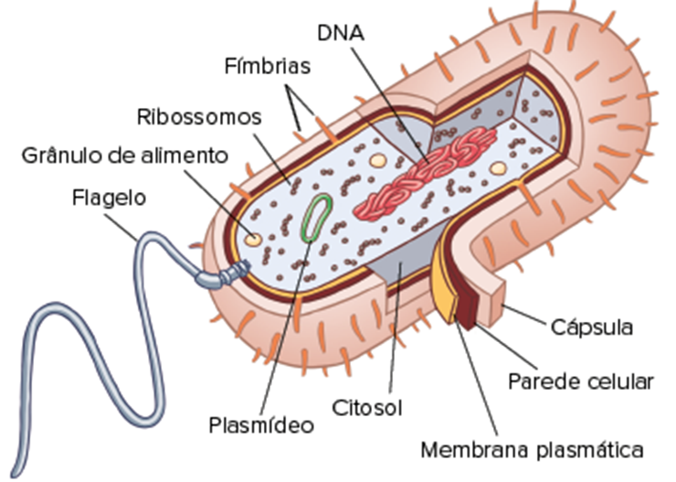
                            <p class="img-credit">Representação esquemática da célula procariótica de uma bactéria.</p>

                            <p class="general-text">Os ribossomos são responsáveis pela produção de proteínas. Os ribossomos bacterianos são um pouco menores e de composição química ligeiramente diferente dos encontrados nas células eucarióticas. Essas diferenças permitem que
                                alguns antibióticos se liguem aos ribossomos bacterianos e bloqueiem a síntese de proteínas delas, sem afetar as células eucarióticas. <br> O material genético da bactéria é constituído por uma molécula de DNA circular,
                                sem histonas e que fica em contato direto com o citoplasma (não há núcleo celular). A região em que o DNA da bactéria (também conhecido como cromossomo bacteriano) se encontra é denominada nucleoide. Além do cromossomo
                                bacteriano, a célula também possui anéis bem menores de DNA denominados plasmídeos, que possuem apenas alguns genes e podem ser transferidos de uma bactéria para outra. <br> Praticamente todas as bactérias possuem um envoltório
                                externo rígido denominado parede celular, responsável pela forma e pela proteção da célula. Se uma bactéria estiver em uma solução hipotônica, por exemplo, a parede celular a impede de inchar e se romper. A maioria possui
                                peptideoglicanos na parede celular, uma rede de polímeros de açúcares modificados interligados por polipeptídios curtos.
                                <br> A parede celular de muitas bactérias é revestida por uma cápsula formada por polissacarídeo ou proteína. Essa camada permite a adesão ao substrato ou às outras bactérias de uma colônia. Algumas cápsulas protegem contra
                                a desidratação e outras atuam como defesa contra o ataque do sistema imunológico do hospedeiro, no caso de bactérias patogênicas. Linhagens capsuladas da bactéria Streptococcus, por exemplo, são capazes de causar pneumonia;
                                linhagens mutantes sem cápsula da mesma bactéria são incapazes de causar a doença, pois são rapidamente atacadas pelos leucócitos, ao invadir o corpo humano. <br> Algumas bactérias possuem anexos proteicos curtos, na forma
                                de filamentos denominados fímbrias, também conhecidos como pili de fixação, que servem para a adesão ao substrato ou a uma colônia. A bactéria Neisseria gonorrhoeae, que causa gonorreia, usa as fímbrias para se prender
                                às mucosas do hospedeiro. As fímbrias sexuais, ou pili, são maiores e servem para conectar e unir duas células antes da transferência de DNA entre elas.
                                <br> Diversas bactérias são capazes de se mover, e a principal estrutura que permite esse deslocamento é o flagelo, um filamento ligado à parede e à membrana plasmática, que se estende sozinho ou em tufos e pode apresentar-se
                                espalhado por toda a superfície da célula ou concentrado em uma ou ambas as suas extremidades. Cada flagelo é formado por uma fibrila da proteína flagelina acrescida de um gancho e de um corpo basal responsável pelo movimento.</p>
                            <div class="double-columned-content">
                                <!-- left -->
                                <div class="double-columned-content-left">
                                    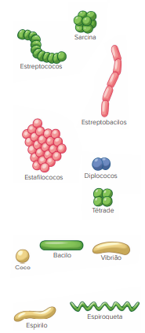
                                    <p class="img-credit">Representação esquemática da forma das células e dos tipos de colônias encontrados em bactérias.</p>
                                </div>
                                <!-- right -->
                                <div class="double-columned-content-right">
                                    <h3 class="titulo1">Diversidade morfológica</h3>
                                    <p class="general-text">A maioria das espécies é unicelular, com célula medindo entre 0,5 e 5 µm, porém há diversas espécies que formam agrupamentos em que os participantes mantêm sua individualidade, sendo capazes de sobreviver quando separados
                                        do grupo. <br> A forma da célula e o tipo de agrupamento são critérios importantes para a classificação das bactérias. As formas mais comuns apresentadas pelas bactérias são: coco (do grego coccus, que significa
                                        “grão”), com forma esférica; bacilo (do grego bacillus, que significa “bastonete”), com forma de bastonete reto; vibrião (do latim vibrare, que significa “tremer”), bastonetes curvos com forma de vírgula; espirilo
                                        (do latim spira, que significa “espiral”), com forma espiralada curta e rígida; e espiroqueta (do latim spira e chaite, que significam, respectivamente, “espiral” e “pele”), com forma espiralada longa e flexível.
                                        <br> Os cocos e os bacilos podem formar colônias. Os principais exemplos são: estreptobacilos, formados por diversos bacilos alinhados; diplococos (do latim diplos, que significa “dois”), formados por dois cocos
                                        unidos; tétrade, formada por quatro cocos unidos; sarcina, composta de oito cocos unidos formando um cubo; estreptococos (do latim streptos, que significa “cadeia”), formados por cocos alinhados como um colar de
                                        contas; e estafilococos (do latim staphyle, que significa “cacho”), formados por cocos unidos como um cacho de uvas.
                                    </p>

                                    <h3 class="titulo1">Metabolismo</h3>
                                    <p class="general-text">As bactérias ultrapassam todos os demais seres vivos com relação à diversidade metabólica. A longa história evolutiva no planeta, que já dura bilhões de anos, certamente é o ponto-chave que permitiu a seleção de diversas
                                        rotas metabólicas fundamentais para a ocupação dos mais variados am</p>
                                    <h4 class="titulo4">Nutrição</h4>
                                    <p class="general-text">Em relação à nutrição, as bactérias podem ser divididas de acordo com a fonte de energia (para as reações químicas) e a fonte de carbono (para a construção de moléculas orgânicas). <br> Bactérias autotróficas utilizam
                                        o gás carbônico (CO2) como fonte de carbono, podendo ser fotoautotróficas (utilizam a luz como fonte de energia) ou quimioautotróficas (utilizam a energia proveniente de reações químicas entre compostos inorgânicos).
                                        As bactérias heterotróficas usam compostos orgânicos como fonte tanto de energia como de átomos de carbono. <br> O quadro comparativo a seguir indica as principais diferenças entre os três grupos nutricionais de
                                        bactérias.
                                    </p>
                                </div>
                            </div>
                            
                            <p class="general-text">As bactérias fotoautotróficas realizam o processo de fotossíntese. Existem dois tipos de fotossíntese nas bactérias: oxigênica e anoxigênica. <br> A fotossíntese oxigênica gera gás oxigênio e é realizada pelas cianobactérias
                                que possuem o pigmento clorofila para a absorção de energia luminosa. Nesse tipo de fotossíntese, há produção de matéria orgânica e gás oxigênio a partir de gás carbônico, água e energia luminosa, como observado na equação
                                a seguir:</p>
                            
                            <p class="img-credit">Equação química da fotossíntese oxigênica</p>
                            <p class="general-text">A fotossíntese ocorre nas membranas fotossintéticas (etapa fotoquímica) e no citosol (etapa química) das cianobactérias, uma vez que esses organismos não possuem cloroplastos (organelas responsáveis pela fotossíntese nos eucariotos
                                fotossintéticos). <br> A fotossíntese anoxigênica, sem produção de oxigênio, é realizada pelas sulfobactérias, presentes em locais com abundância de enxofre. Elas possuem o pigmento bacterioclorofila para a absorção de
                                energia luminosa. Os reagentes utilizados são o gás carbônico, como fonte de carbono, e sulfeto de hidrogênio (H2S), como fonte de hidrogênios, para a produção de matéria orgânica e enxofre, como observado na equação a
                                seguir:
                            </p>
                            
                            <p class="img-credit">Equação química da fotossíntese anoxigênica.
                            </p>
                            <p class="general-text">As bactérias quimioautotróficas, também conhecidas como quimiolitotróficas, realizam o processo de quimiossíntese, no qual utilizam parte da energia proveniente de reações químicas entre moléculas inorgânicas para fixar carbono.
                                Algumas bactérias do ciclo do nitrogênio, por exemplo, oxidam amônia (NH3) em nitrito (NO2 – ), com liberação de energia, que é então utilizada por essas bactérias para a construção de moléculas orgânicas. Outras bactérias
                                oxidam gás hidrogênio (H2), sulfeto de ferro (FeS), nitrato (NO3 – ) ou outros compostos inorgânicos. Esse tipo de nutrição é exclusivo de procariotos (bactérias e arqueas).
                                <br> As bactérias heterotróficas obtêm tanto energia como átomos de carbono de compostos orgânicos. A maioria é heterótrofa por absorção, ou seja, retira moléculas orgânicas já digeridas presentes no meio. Essas bactérias
                                podem ser decompositoras, alimentando-se de cadáveres e restos de alimento, ou simbiontes, vivendo no corpo de seres vivos. As bactérias simbiontes podem ser parasitas (causam prejuízo ao hospedeiro), mutualistas (beneficiam
                                o hospedeiro) ou comensais (não beneficiam nem prejudicam o hospedeiro). </p>


                            <div>
                                <!-- watch out -->
                                <div class='wrap-collabsible'>
                                    <input id='collapsible-his-1' class='toggle-mat' type='checkbox'>
                                    <label for='collapsible-his-1' class='lbl-toggle-mat'>
                      <div class='flex-icon'>
                        
                        <p class='collapsible-title'>Fique ligado!</p>
                      </div>
                      <div class='flex-icon'>
                        
                        
                      </div>
                    </label>
                                    <div class='collapsible-content-mat'>
                                        <div class='content-inner'>
                                            <div class='text-content-area'>
                                                <p class='general-text'>
                                                    <p class='chapter-description general-text'>
                                                        As membranas fotossintéticas das cianobactérias são semelhantes aos tilacoides dos cloroplastos, nos quais estão inseridas as moléculas de clorofila e demais pigmentos fotossintéticos. Esta é uma grande evidência da teoria endossimbiôntica, que sugere
                                                        que cloroplastos surgiram do englobamento de procariotos fotossintéticos, como as cianobactérias.
                                                    </p>
                                            </div>
                                            </p>
                                        </div>
                                    </div>
                                </div>
                            </div>


                            <h4 class="titulo4">Obtenção de energia</h4>
                            <p class="general-text">Para retirar a energia presente nas moléculas orgânicas, as bactérias podem realizar fermentação ou respiração celular. <br> A fermentação é um processo anaeróbico (não consome oxigênio) no qual há a oxidação parcial da glicose.
                                Nesse processo, a bactéria realiza a glicólise (quebra da glicose), com formação de subprodutos e liberação de energia, que é utilizada na construção de moléculas de ATP. Existem diversos tipos de fermentação nas bactérias,
                                como a lática (produz ácido lático), a alcoólica (produz etanol) e a metanogênica (produz gás metano). A fermentação tem menor rendimento energético que a respiração celular, uma vez que a oxidação da glicose é apenas parcial.
                                A equação química a seguir representa, de forma simplificada, a fermentação alcoólica:</p>
                            
                            <p class="img-credit">Equação química da fermentação alcoólica</p>
                            <p class="general-text">A respiração celular é um processo em que ocorre oxidação total da glicose. É dividida em três fases: glicólise, ciclo de Krebs e cadeia transportadora de elétrons. Muitas bactérias realizam a respiração aeróbica, em que o
                                gás oxigênio é usado. Algumas bactérias, entretanto, realizam respiração anaeróbica, em que participam compostos diferentes do gás oxigênio, como o nitrato (NO3 – ) ou o sulfato (SO4 2–). A respiração celular tem maior
                                rendimento energético que a fermentação, pois há a oxidação total da glicose. A equação química a seguir representa, de forma simplificada, a respiração aeróbica:</p>

                            
                            <p class="img-credit">Equação química da respiração aeróbica</p>
                            <p class="general-text">Tendo em vista essa diversidade metabólica, as bactérias podem ser encontradas em ambientes do planeta com ou sem o gás oxigênio. Com relação à utilização do gás oxigênio no metabolismo, as bactérias podem ser divididas em
                                três grupos:
                                <br>
                                <b> • Aeróbicas obrigatórias:</b> fazem respiração celular aeróbica e não podem viver na ausência desse gás. <br>
                                <b> • Anaeróbicas obrigatórias:</b> não possuem enzimas necessárias para a utilização do gás oxigênio e morrem na presença desse gás. <br>
                                <b> • Anaeróbicas facultativas: </b> podem utilizar o gás oxigênio na respiração celular aeróbica, mas também podem realizar fermentação ou respiração anaeróbica se estiverem em ambiente sem oxigênio. </p>


                            <div class="wrap-collabsible">
                                <input id="collapsible-mat" class="toggle-mat" type="checkbox">
                                <label for="collapsible-mat" class="lbl-toggle-mat">
                    <div class="flex-icon">
                      
                      <p class="collapsible-title">
                        Em Quimica, vemos que...
                      </p>
                    </div>
                    <div class="flex-icon">
                      
                      
                    </div>
                  </label>
                                <div class="collapsible-content-mat">
                                    <div class="content-inner">
                                        <div class="text-content-area">
                                            ... o gás oxigênio é uma molécula extremamente reativa que forma muitos subprodutos tóxicos, como o superóxido (O2 —), o peróxido de hidrogênio (H2O2) e o radical livre hidroxila (OH—). Organismos aeróbicos possuem enzimas que metabolizam esses produtos
                                            tóxicos, como a catalase, que metaboliza a água oxigenada (H2O2); e a superóxido dismutase, que metaboliza o superóxido (O2 —). A ação combinada dessas enzimas é fundamental, pois esses subprodutos são responsáveis
                                            pela formação do radical livre hidroxila (OH—), extremamente reativo e capaz de matar a célula, ao danificar o DNA e as enzimas celulares. Bactérias anaeróbicas restritas, geralmente, não produzem as enzimas
                                            catalase e superóxido dismutase, o que explica a letalidade do gás oxigênio para esses organismos.
                                        </div>
                                    </div>
                                </div>
                            </div>


                            <div class="leitura-doc">
                                <p class="title">
                                    Questão resolvida
                                </p>
                            </div>
                            <div class="flex-exercicios">
                                <p class="exercicio-text"><b>1</b></p>
                                <p class="exercicio-text">Unicamp-SP Com a ausência de oxigênio e uma atmosfera com característica redutora, os primeiros seres vivos desenvolveram um metabolismo exclusivamente anaeróbio. A transição para o processo aeróbio aconteceu entre 2,7
                                    bilhões e 1,6 bilhão de anos atrás com o surgimento das primeiras algas azuis, as cianobactérias, capazes de utilizar a água como doador de elétrons e liberar oxigênio na atmosfera terrestre.</p>
                            </div>
                            <ol class="questao-alternativas" type="a">
                                <li> Cite um organismo que poderia ter existido há 3 bilhões de anos e uma possível fonte de energia para a manutenção do metabolismo desse organismo.</li>
                                <li>Explique as diferenças entre os tipos de respiração celular das espécies atualmente existentes.</li>
                            </ol>

                            <h4 class="titulo4">Resolução:</h4>
                            <ol class="questao-alternativa" type="a">
                                <li>Um organismo que poderia ter existido seria um procarioto unicelular (bactéria ou arquea) com metabolismo anaeróbico, uma vez que não havia oxigênio na atmosfera suficiente para suportar metabolismo aeróbico. Este organismo
                                    poderia ser heterótrofo, realizando fermentação da matéria orgânica para a obtenção de energia, ou autótrofo quimiossintetizante, obtendo energia da oxidação de compostos inorgânicos.</li>
                                <li>A respiração celular é um processo em que ocorre oxidação total da molécula de glicose, sendo dividido em três fases: glicólise, o ciclo de Krebs e a cadeia transportadora de elétrons. As espécies atualmente existentes
                                    de seres vivos realizam dois tipos de respiração celular: aeróbica e anaeróbica. Na respiração aeróbica, o oxigênio é utilizado como aceptor final de elétrons na cadeia transportadora de elétrons. Na respiração anaeróbica,
                                    substâncias diferentes do oxigênio, como o nitrato (NO3 – ) ou o sulfato (SO4 2–), atuam como aceptores finais de elétrons na cadeia transportadora de elétrons.</li>
                            </ol>

                            <div>
                                <!-- watch out -->
                                <div class='wrap-collabsible'>
                                    <input id='collapsible-his-2' class='toggle-mat' type='checkbox'>
                                    <label for='collapsible-his-2' class='lbl-toggle-mat'>
                      <div class='flex-icon'>
                        
                        <p class='collapsible-title'>Fique ligado!</p>
                      </div>
                      <div class='flex-icon'>
                        
                        
                      </div>
                    </label>
                                    <div class='collapsible-content-mat'>
                                        <div class='content-inner'>
                                            <div class='text-content-area'>
                                                <p class='general-text'>
                                                    <p class='chapter-description general-text'>
                                                        A bipartição das bactérias não é uma mitose, mesmo sendo muito parecida com esse tipo de divisão celular. A mitose é uma divisão que ocorre apenas em células eucarióticas.
                                                    </p>
                                            </div>
                                            </p>
                                        </div>
                                    </div>
                                </div>
                            </div>


                            <h3 class="titulo1">Reprodução</h3>
                            <p class="general-text">As bactérias têm a capacidade de se reproduzir rapidamente em ambiente favorável. A reprodução mais comum é a bipartição, também conhecida como cissiparidade ou fissão binária, uma reprodução assexuada bem simples e muito rápida,
                                que é capaz de produzir milhares de novas bactérias geneticamente iguais em apenas algumas horas. <br> A bipartição inicia-se quando o DNA da bactéria começa a se replicar em um local específico do cromossomo bacteriano,
                                denominado origem de replicação. À medida que o DNA se duplica, uma das origens se move em direção à extremidade oposta da célula, que vai se alongando. Para finalizar, a membrana plasmática realiza uma invaginação, que
                                divide a célula inicial em duas células-filhas. <br> A habilidade que as bactérias possuem de suportar condições adversas também contribui para o seu sucesso no planeta. É comum a formação de estruturas de resistência,
                                denominadas esporos ou endósporos, quando encontram condições adversas, como escassez de nutrientes e de água. A célula original duplica o seu DNA e o envolve com a membrana plasmática e uma parede reforçada, formando assim
                                um esporo interno (endósporo). Logo após, a água é removida do esporo para interromper seu metabolismo, e a célula original se desintegra, deixando apenas o esporo de resistência para trás
                            </p>


                            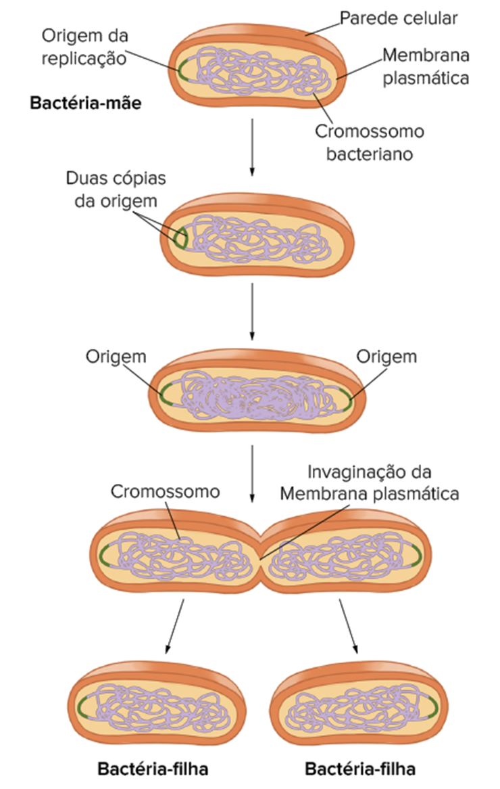
                            <p class="img-credit">REECE, J. B. et al. Biologia de Campbell. 10. ed. Porto Alegre: Artmed, 2015.</p>
                            <p class="general-text">Representação esquemática da bipartição de uma bactéria. A. Início da duplicação do DNA na origem de replicação. B. Uma cópia da origem de replicação está em cada uma das extremidades da célula. A replicação continua e ocorre
                                o alongamento celular. C. Invaginação da membrana plasmática para a divisão da célula logo após o final da replicação. D. Separação das duas células-filhas geneticamente iguais.</p>
                            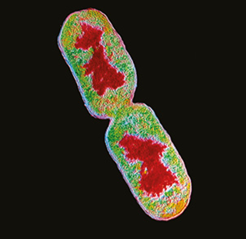
                            <p class="img-credit">Eletromicrografia de transmissão da bactéria Escherichia coli (cerca de 2 µm de comprimento) na fase final da bipartição. O DNA é indicado em vermelho. </p>
                            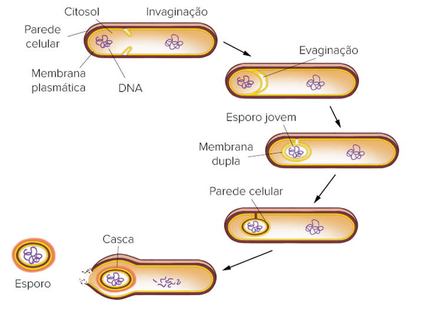
                            <p class="general-text">Processo de formação de esporo nas bactérias. A. A membrana plasmática da célula realiza uma invaginação ao redor do novo DNA e de uma pequena porção do citoplasma, formando uma nova célula; B. A membrana plasmática realiza
                                uma evaginação (englobamento) para envolver a nova célula; C. A membrana plasmática envolve completamente a nova célula, formando um esporo jovem; D. Ocorre a produção de parede celular entre as duas membranas plasmáticas
                                do esporo jovem; E. Formação da casca e liberação do esporo maduro.
                            </p>


                            <h3 class="titulo1">Mecanismos de variabilidade genética</h3>
                            <p class="general-text">As bactérias não possuem reprodução sexuada, mas possuem uma grande variabilidade genética nas populações. Existem dois mecanismos responsáveis pela grande variabilidade genética apresentada pelas bactérias: as mutações e as
                                recombinações gênicas. <br>
                                <b> Mutações </b> são alterações no material genético. As mutações podem aumentar, de forma significativa, a diversidade genética em espécies que possuem reprodução extremamente rápida, como as bactérias. <br>
                                <b> Recombinações gênicas</b> são formadas a partir da mistura de DNA de fontes diferentes. Nas bactérias podem ocorrer por meio de três mecanismos: transformação, transdução e conjugação. <br> Na
                                <b> transformação,</b> bactérias absorvem moléculas de DNA presentes no meio, geralmente provenientes de outras bactérias mortas, e as incorpora em seu material genético.</p>


                            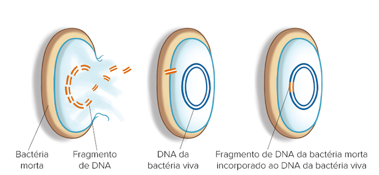
                            <p class="img-credit">SADAVA, D. et al. Vida: a ciência da Biologia. São Paulo: Artmed, 2009.</p>
                            <p class="general-text">Representação esquemática da transformação nas bactérias. A. Quando uma bactéria morre, os fragmentos de DNA da célula ficam dispersos no meio; B. Uma bactéria viva absorve um fragmento de DNA da bactéria morta; C. Ocorre recombinação
                                entre o fragmento de DNA da bactéria morta e o cromossomo da bactéria viva, que incorpora o novo gene e fica transformada.</p>
                            <p class="general-text">Na transdução, bacteriófagos (vírus que parasitam bactérias) transportam genes bacterianos de uma bactéria para outra. Ao se reproduzirem, durante a etapa de montagem dos novos bacteriófagos, pode ocorrer de o DNA bacteriano
                                ficar no interior da cápsula do vírus. Esse vírus pode ser capaz de se fixar em outra bactéria e injetar o segmento de DNA bacteriano nela.</p>

                            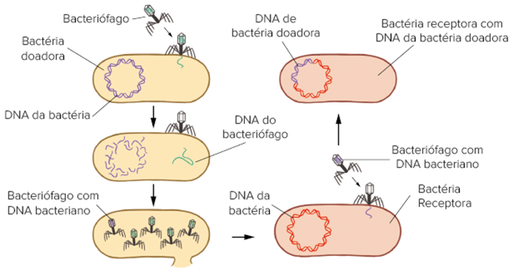
                            <p class="img-credit">SOLOMON et al. Biology. 9. ed. Belmont: Cengage Learning, 2011.</p>
                            <p class="general-text">Representação esquemática da transdução nas bactérias. A. Bacteriófago injeta o seu DNA na bactéria doadora; B. Destruição do DNA bacteriano por enzimas do bacteriófago; C. Reprodução viral e montagem de novos bacteriófagos,
                                alguns com DNA bacteriano; D. Bacteriófago injeta DNA bacteriano na bactéria receptora; E. Bactéria receptora com DNA da doadora em seu cromossomo após recombinação. <br> Na conjugação, ocorre a transferência de DNA entre
                                duas bactérias, de espécies iguais ou diferentes, que ficam unidas temporariamente. A transferência é unidirecional (ou seja, da bactéria doadora para a célula receptora) e ocorre por meio de um tubo de conjugação temporário
                                entre elas. A célula doadora transfere uma fita do seu DNA, ou de um plasmídeo, e após a transferência ocorre a produção de fitas complementares nas duas células.
                            </p>

                            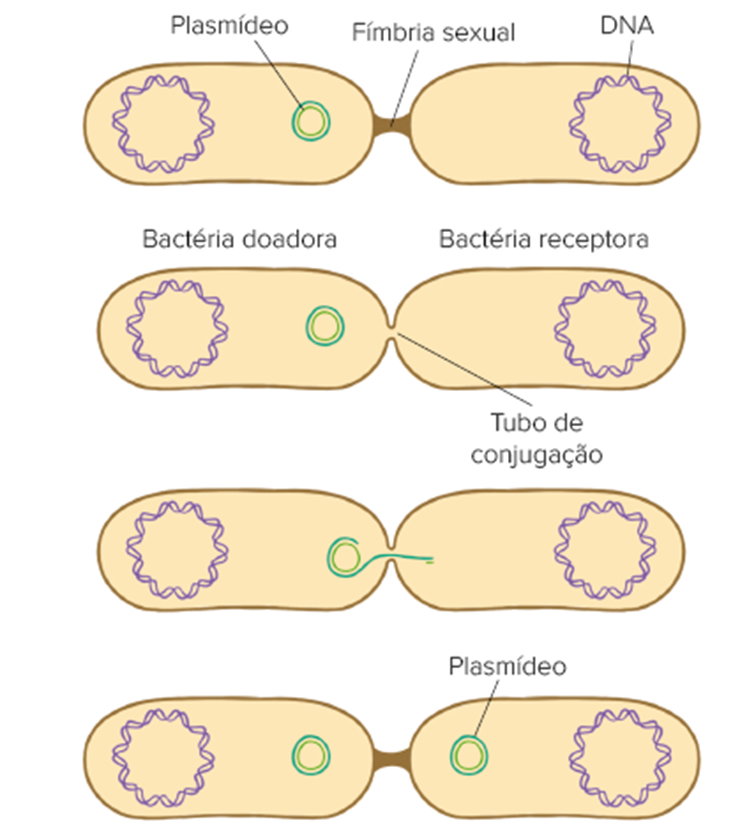
                            <p class="img-credit">SOLOMON et al. Biology. 9. ed. Belmont: Cengage Learning, 2011.</p>
                            <p class="general-text">Representação esquemática da conjugação de uma bactéria. A. A bactéria doadora se conecta com a receptora por meio da fímbria sexual; B. Formação do tubo de conjugação entre as bactérias; C. Passagem de uma fita do plasmídeo
                                da bactéria doadora para a receptora; D. Produção das fitas complementares dos plasmídeos nas duas bactérias e desintegração do tubo de conjugação. </p>

                            <h3 class="titulo1">Importância ecológica e econômica</h3>
                            <p class="general-text">As bactérias são muitas vezes lembradas como organismos nocivos e perigosos, pois são responsáveis por várias doenças no ser humano. Entretanto, existem poucas espécies nocivas. De uma forma geral, as bactérias são fundamentais
                                para a manutenção da vida em nosso planeta. <br> Muitas bactérias atuam como decompositoras nos ecossistemas, contribuindo para a reciclagem da matéria em nosso planeta. Nos centros urbanos, as bactérias decompositoras
                                auxiliam na decomposição do esgoto doméstico e do lixo. <br> Outras espécies, como as cianobactérias, realizam fotossíntese e são responsáveis pela produção de matéria orgânica e oxigênio, atuando como produtoras nas cadeias
                                alimentares do meio aquático.
                                <br> No meio terrestre, elas podem se associar aos fungos e formar liquens, que atuam como pioneiros na sucessão ecológica. <br> Bactérias também atuam no ciclo do nitrogênio e são responsáveis pelas transformações bioquímicas
                                que ocorrem com este elemento químico, sem as quais ele não poderia ser aproveitado pelos seres vivos. <br> Diversas bactérias são utilizadas na indústria farmacêutica para a produção de antibióticos e vitaminas. O antibiótico
                                neomicina, por exemplo, é produzido por uma bactéria do gênero Streptomyces. Na indústria química, diversas substâncias, como acetona, metanol e butanol são produtos do metabolismo de bactérias. <br> As bactérias do gênero
                                Lactobacillus realizam a fermentação lática e podem ser utilizadas na produção de queijos, iogurtes, requeijões e coalhadas. <br> Além disso, lactobacilos são bactérias encontradas na biota intestinal e são fundamentais
                                para o funcionamento do intestino. <br> Algumas bactérias podem ser utilizadas na técnica de biorremediação, que consiste na utilização de seres vivos para descontaminar um ambiente poluído. Um exemplo é a utilização de
                                bactérias do gênero Pseudomonas na descontaminação de ambientes poluídos por pesticidas ou petróleo. <br> Bactérias podem ser utilizadas no controle biológico de pragas agrícolas, contribuindo para a diminuição de pesticidas
                                sintéticos. Como exemplo, temos a bactéria da espécie Bacillus thuringiensis kurstaki, utilizada como biopesticida (Dipel) para o controle das lagartas-da-soja e do algodão. <br> As bactérias que vivem em nosso intestino
                                mantêm conosco uma relação de mutualismo, pois são responsáveis pela produção de vitaminas, como B12 e K, recebendo em troca alimento e abrigo. Além disso, essas bactérias regulam a atividade intestinal e nos protegem de
                                bactérias que poderiam nos causar doenças.</p>


                            <div class="titulo1-section">
                                
                                <h3 class="titulo1">Doenças causadas por bactérias
                                </h3>
                            </div>

                            <p class="general-text">Apenas uma pequena parcela de todas as bactérias é patogênica, e as doenças causadas por elas são denominadas, genericamente, bacterioses. <br> Ao contrário das viroses, as bacterioses podem ser tratadas com antibióticos, medicamentos
                                que matam as bactérias. Nos últimos anos, entretanto, ocorreu um aumento no número de bactérias resistentes aos antibióticos. Atualmente, existem bactérias resistentes a todos os antibióticos disponíveis, as bactérias multirresistentes
                                ou superbactérias. Várias medidas podem ser tomadas para minimizar esse fenômeno, como restringir a venda dos antibióticos, incentivar os pacientes a tomar os medicamentos no tempo indicado e higienizar constantemente os
                                hospitais. Essas medidas servem para reduzir a chance de surgimento de novas linhagens e eliminar possíveis fontes de bactérias resistentes. <br> Além dos antibióticos, algumas doenças causadas por bactérias podem ser tratadas
                                com soros específicos, como o soro antibotulínico para o tratamento do botulismo; e outras prevenidas por meio de vacinas, como a vacina BCG, que protege contra tuberculose.
                            </p>


                            <h3 class="titulo1">Botulismo</h3>
                            <p class="general-text"><b>• Agente causador:</b> bactéria anaeróbica obrigatória Clostridium botulinum. Esta bactéria possui formato de bacilo e forma esporos de resistência, que são encontrados no solo, nas fezes dos animais e nos alimentos. Os
                                esporos podem sobreviver em alimentos industrializados mal processados (enlatados, conservas e embutidos). O ambiente anaeróbico, presente nos enlatados, torna o meio ideal para a proliferação da bactéria que contamina
                                o alimento com a toxina botulínica. <br>
                                <b> • Transmissão: </b>ingestão de alimentos contaminados com a toxina botulínica. A contaminação também pode ocorrer por meio da penetração dos esporos da bactéria em ferimentos profundos. <br>
                                <b> • Sintomas: </b> a toxina botulínica bloqueia a transmissão de impulsos nervosos entre neurônios e células musculares, causando paralisia muscular. Os sintomas são: dores de cabeça; tontura; visão turva; ptose palpebral
                                (queda da pálpebra); vômitos; diarreia; dificuldade para respirar, engolir e falar; paralisia descendente da musculatura respiratória, dos braços e das pernas. A doença pode ser fatal se não for tratada rapidamente, em
                                decorrência da paralisia respiratória. <br>
                                <b> • Tratamento:</b> aplicação de soro antibotulínico (SAB) para neutralizar a toxina, e antibióticos para matar as bactérias. O tratamento deve ser realizado na Unidade de Terapia Intensiva (UTI) para suporte e controle
                                das complicações. O processo de recuperação é lento. <br>
                                <b> • Profilaxia:</b> não consumir alimentos em conserva que estiverem com as tampas estufadas, vidros embaçados, em embalagens danificadas ou com alterações no cheiro e no aspecto; o preparo de conservas caseiras deve
                                seguir rigorosamente os cuidados de higiene e conservação; as mãos sempre devem ser higienizadas antes de manipular os alimentos; ferimentos devem ser mantidos cobertos e devidamente esterilizados.
                            </p>

                            <h3 class="titulo1">Cólera</h3>
                            <p class="general-text"><b> • Agente causador:</b> bactéria anaeróbica facultativa Vibrio cholerae. Esta bactéria possui um flagelo em uma das extremidades e formato de vibrião, sendo conhecida como vibrião colérico. <br>
                                <b> • Transmissão:</b> ingestão de água e de alimentos contaminados, pois a transmissão é fecal-oral. Já foram registrados casos em que peixes, frutos do mar e até mesmo gelo fabricado com água não tratada foram veículos
                                de contaminação. Epidemias de cólera são comuns em regiões onde as condições de higiene são precárias. <br>
                                <b> • Sintomas:</b> a bactéria se reproduz no intestino delgado e induz as células intestinais a perderem água e sais minerais. Os sintomas são vômitos, diarreia acentuada (pode chegar a mais de 10 litros por dia), desidratação
                                severa e paralisia dos rins. Em mais de 90% das pessoas que contraem a bactéria, a doença é assintomática ou possui sintomas leves. <br>
                                <b> • Tratamento:</b> a medida terapêutica mais importante é a reidratação, que pode ser feita por via oral, com soro caseiro, ou intravenosa, com soro hospitalar. Para matar as bactérias são utilizados antibióticos específicos,
                                vendidos com prescrição médica. <br>
                                <b> • Profilaxia:</b> tratar os doentes para evitar a contaminação do ambiente com as fezes contaminadas; fornecer saneamento básico, com rede de esgoto e água tratada; ingerir apenas água potável (fervida ou clorada e
                                filtrada); lavar bem os alimentos, principalmente as hortaliças e os frutos; higienizar as mãos constantemente, especialmente antes de preparar ou consumir alimentos; só ingerir frutos do mar bem cozidos; administrar vacina
                                oral.
                            </p>


                            <div class="double-columned-content">
                                <!-- left -->
                                <div class="double-columned-content-left">
                                    <h3 class="titulo1">Febre maculosa</h3>
                                    <p class="general-text"><b> • Agente causador: </b>bactéria aeróbica obrigatória Gram-negativa da espécie Rickettsia rickettsii. Esta bactéria possui formato de cocobacilo (formato intermediário entre coco e bacilo) e, da mesma maneira que
                                        os vírus, somente se reproduz no interior das células, podendo ser encontrada no núcleo ou no citoplasma das células hospedeiras. As principais células infectadas pela bactéria são as endoteliais, que revestem internamente
                                        os vasos sanguíneos. <br>
                                        <b> • Transmissão:</b> por meio da picada de carrapatos do gênero Amblyomma, principalmente o carrapato-estrela ou micuim da espécie Amblyomma cajennense, que é o principal vetor e reservatório da bactéria. Carrapatos
                                        são aracnídeos que possuem quatro estágios no seu ciclo de vida: ovo, larva, ninfa e adulto. Transmitem a doença ao ser humano pela picada, pois a bactéria está presente em sua saliva. Geralmente, uma pessoa não
                                        percebe quando é picada, pois a saliva possui substância anestésica. Um carrapato contaminado transmite a bactéria para as outras fases de seu ciclo de vida (transmissão transestadial) e para os seus descendentes
                                        (transmissão transovariana), garantindo a presença da bactéria por várias gerações. As capivaras e os cavalos assumem grande importância epidemiológica, pois são os principais hospedeiros do carrapato.
                                        <br>
                                        <b> • Sintomas:</b> febre, dor de cabeça, náuseas, vômitos, diarreia, dores musculares, manchas vermelhas nas mãos e nos pés, gangrena dos dedos, paralisia dos membros e respiratória. <br>
                                        <b> • Tratamento:</b> a doença tem cura, desde que sejam utilizados antibióticos específicos logo nos primeiros dias de contaminação. Atraso no diagnóstico e no tratamento podem provocar complicações graves, com
                                        comprometimento do sistema nervoso central, rins e pulmões, podendo causar a morte dos pacientes. <br>
                                        <b> • Profilaxia:</b> evitar exposição aos locais que possuem carrapatos contaminados; usar botas compridas, calças dentro das meias e examinar o corpo constantemente (a cada três horas) na busca de carrapatos;
                                        retirá-lo do corpo com uma pinça e cautelosamente, para evitar a contaminação do ferimento; higienizar e esterilizar corretamente o local da picada com água e sabão ou álcool; manter o gramado sempre aparado e rente
                                        ao solo; fazer o controle nos animais domésticos, como cães e cavalos, com o uso de carrapaticidas específicos
                                    </p>
                                </div>
                                <!-- right -->
                                <div class="double-columned-content-right">
                                    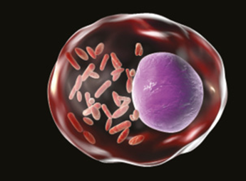
                                    <p class="img-credit">Representação artística da bactéria Rickettsia rickettsii dentro de uma célula humana. Tamanho: 0,2-0,5 µm por 0,2- 0,3 µm.</p>
                                </div>
                            </div>

                            <div class="boxe-06-02-cie">
                                <header>
                                    
                                    <strong>Mais</strong>
                                </header>

                                <section>
                                    <h4 class="titulo4">A história do cólera</h4>
                                    <p class="general-text">Assista a história de como o cólera transformou a vida dos moradores de um povoado e como todos nós podemos contribuir para viver livre dessa doença. Disponível em: (http://p.p4ed.com/ SGVGI).
                                    </p>
                                </section>
                            </div>


                            <h3 class="titulo1">Hanseníase</h3>
                            <p class="general-text"><b> • Agente causador:</b> bactéria Mycobacterium leprae, ou bacilo de Hansen, em memória de seu descobridor. Antigamente, a hanseníase era conhecida como lepra. A bactéria possui formato de cocobacilo (formato intermediário
                                entre coco e bacilo) e, da mesma maneira que os vírus, somente se reproduz no interior de células hospedeiras. Infecta principalmente a pele, mas também pode atingir nervos periféricos, os olhos e outros órgãos.
                                <br>
                                <b> • Transmissão:</b> por vias aéreas, pelo contato com gotículas de saliva ou secreções do nariz. A transmissão não ocorre pelo toque na pele. <br>
                                <b> • Sintomas:</b>manchas na pele (pardas ou esbranquiçadas, às vezes com limites imprecisos); dormência ou perda de sensibilidade em partes do corpo, quando nervos são afetados; caroços ou inchaços nas mãos, cotovelos
                                e orelhas (partes mais frias, mais propensas à infecção). <br>
                                <b> • Tratamento:</b> antibiótico específico. O tratamento é longo, mas eficaz. A hanseníase tem cura, quando devidamente tratada. É importante que a pessoa não pare o tratamento no meio. <br>
                                <b> • Profilaxia:</b> além de hábitos de higiene e tratamento das pessoas doentes, a imunização contra a tuberculose (por contato prévio ou por vacinação) parece diminuir a chance de desenvolver hanseníase.</p>

                            <h3 class="titulo1">Leptospirose</h3>
                            <p class="general-text"> <b> • Agente causador:</b> bactérias aeróbicas obrigatórias do gênero Leptospira, sendo mais comum a espécie Leptospira interrogans. A bactéria possui formato espiralado (denominado espiroqueta) e flagelos e infecta roedores
                                e outros animais como bois, porcos, cavalos, cabras, ovelhas e cães, que podem transmitir a doença por meio da urina contaminada. Essa bactéria pode sobreviver até seis meses no ambiente após ter sido eliminada pela urina
                                de um animal contaminado.
                                <br>
                                <b> • Transmissão:</b> penetração das bactérias pela pele da pessoa em contato com água ou urina contaminada. Animais contaminados como ratos são atraídos ao meio urbano pelo lixo doméstico. Ao urinar no lixo e no esgoto
                                onde vive, o animal contamina este material, que pode entrar em contato com a água de enchente e contaminar diversas pessoas. A transmissão também pode ocorrer pela ingestão de água ou alimentos contaminados.
                                <br>
                                <b> • Sintomas:</b> a doença pode ser assintomática, mas pode ocorrer febre alta, dor de cabeça, dores musculares (especialmente na panturrilha), manchas vermelhas pelo corpo, diarreia e vômitos. Nas formas mais graves
                                ocorre icterícia (pele e olhos amarelados), hemorragias (mais comumente a pulmonar) e insuficiência renal. <br>
                                <b> • Tratamento:</b> utilização de antibióticos específicos; o acompanhamento do volume urinário e da função renal são fundamentais para se indicar ou não uma diálise peritoneal, que reduz o dano cerebral e a letalidade
                                da doença; o rápido tratamento evita complicações (como reposição eletrolítica e transfusão de sangue). <br>
                                <b> • Profilaxia:</b> saneamento básico, com rede de esgoto e água tratada para a população; ingerir apenas água potável (fervida ou clorada e filtrada); lavar bem os alimentos, principalmente as hortaliças e os frutos;
                                higienizar as mãos constantemente, especialmente antes de preparar ou consumir alimentos; controle dos roedores; evitar contato com água ou lama de enchentes; evitar o acúmulo de lixo doméstico, para que não ocorra atração
                                de ratos; vedação e esterilização das caixas-d’água; e vacinação de animais domésticos
                            </p>

                            <h3 class="titulo1">Peste</h3>
                            <p class="general-text"><b>• Agente causador:</b> bactéria anaeróbica facultativa Yersinia pestis. Os roedores são os principais reservatórios da bactéria e estima-se que mais de 200 espécies estejam envolvidas com seu ciclo epidemiológico.
                            </p>
                            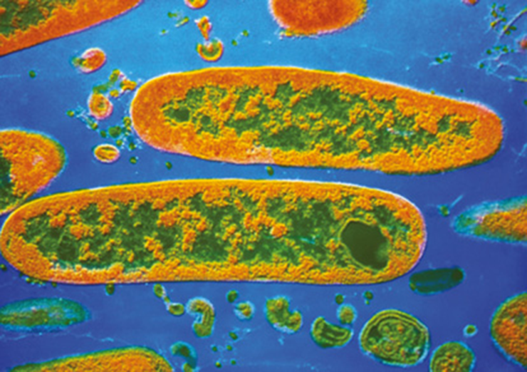
                            <p class="img-credit">Eletromicrografia da bactéria Yersinia pestis, causadora da peste.</p>
                            <p class="general-text"><b> • Transmissão:</b> picada de pulgas contaminadas da espécie Xenopsylla cheopis. Elas se contaminam ao se alimentarem de sangue de roedores contaminados. A doença também pode ser transmitida por meio de secreções respiratórias
                                de pessoas que desenvolvem a forma pneumônica da doença. <br>
                                <b> • Sintomas:</b> a doença se manifesta sob três formas clínicas principais. Na peste bubônica (mais comum no Brasil) os sintomas são febre alta, calafrios, cefaleia, náuseas, dores musculares e inchaço dos linfonodos,
                                formando bubões dolorosos. Na peste septicêmica (presença constante das bactérias no sangue), os sintomas são mais graves, pois, além dos sintomas da peste bubônica, também ocorrem hemorragias que deixam manchas escuras
                                (peste negra) e necrose dos membros. Na forma pneumônica (presença das bactérias nos pulmões), além dos sintomas comuns às outras formas, também ocorre dor no tórax, falta de ar e expectoração sanguinolenta. A doença pode
                                ser fatal se não for devidamente tratada. <br>
                                <b> • Tratamento:</b> utilização de antibióticos específicos e de medicamentos para aliviar os sintomas. O tratamento deve ser iniciado rapidamente para evitar que a bactéria se espalhe pelo organismo. A notificação de
                                casos suspeitos da doença aos órgãos de saúde é compulsória.
                                <br>
                                <b> • Profilaxia:</b> tratamento dos doentes para evitar a contaminação de outras pessoas; evitar contato com pessoas doentes, principalmente se houver feridas no corpo e forma pneumônica da doença; saneamento básico, com
                                rede de esgoto e água tratada; evitar o acúmulo de lixo, que pode atrair ratos contaminados; controle da população de pulgas e ratos contaminados.</p>

                            <h3 class="titulo1">Sífilis</h3>
                            <p class="general-text"><b> • Agente causador:</b> bactéria anaeróbica facultativa Treponema pallidum. A bactéria possui formato espiralado (espiroqueta) e flagelos internos (endoflagelos) responsáveis pela locomoção da bactéria. O movimento realizado
                                pela bactéria é muito semelhante ao saca-rolha. <br>
                                <b> • Transmissão:</b> por meio de relações sexuais sem preservativo, uma vez que a bactéria invade o corpo por meio de pequenos cortes presentes na pele ou mucosas. A doença pode ser congênita, ou seja, transmitida da
                                mãe para o filho durante a gravidez ou no parto. Uma outra forma de transmissão é por meio de transfusão com sangue contaminado. <br>
                                <b> • Sintomas:</b> a doença se manifesta em três estágios, separados por períodos de latência. Na sífilis primária (1o estágio), o principal sintoma é a formação de uma ferida indolor, denominada cancro duro, no local
                                da infecção. A ferida regride mesmo sem tratamento, sem deixar cicatrizes. <br> Na secundária (2o estágio), cerca de seis semanas após a formação do cancro duro, os sintomas são febre, dor de cabeça, dores musculares, inchaço
                                nos linfonodos e manchas vermelhas e feridas por todo o corpo, incluindo palma das mãos e sola dos pés. <br> Na terciária (3o estágio), as bactérias afetam o sistema nervoso, os olhos e o coração, causando formigamento,
                                problemas de visão (cegueira), perda de coordenação motora, acidente vascular encefálico e problemas cardiovasculares. A sífilis congênita pode causar má-formação do feto, aborto espontâneo e morte fetal. Em muitos casos,
                                entretanto, os sintomas da doença aparecem nos primeiros meses de vida, como feridas no corpo, alterações nos ossos e sistema nervoso (cegueira). <br>
                                <b> • Tratamento:</b> utilização de antibióticos específicos. Quanto mais cedo a doença é diagnosticada, maior o sucesso do tratamento e menores serão as sequelas. <br>
                                <b> • Profilaxia:</b> utilizar preservativo nas relações sexuais; tratamento dos doentes para evitar a contaminação de outras pessoas; fiscalização nos bancos de sangue.</p>
                            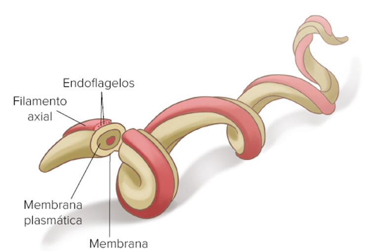
                            <p class="img-credit">Representação esquemática da bactéria Treponema pallidum, indicando o formato de espiroqueta (espiralada) e o filamento axial, com endoflagelos responsáveis pela locomoção da célula.</p>


                            <div class="double-columned-content">
                                <!-- left -->
                                <div class="double-columned-content-left">
                                    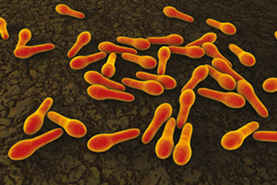
                                    <p class="img-credit">Representação computadorizada da bactéria Clostridium tetani (4 a 10 µm de comprimento), causadora do tétano.</p>

                                    <p class="teste3"><b> Opistótono:</b> do grego “opisthen” e “tonos”, que significam, respectivamente, “para trás” e “tensão”. Condição na qual o corpo de uma pessoa ou de um animal fica rígido, com as costas arqueadas e a cabeça jogada
                                        para trás.
                                    </p>
                                </div>
                                <!-- right -->
                                <div class="double-columned-content-right">
                                    <h3 class="titulo1">Tétano</h3>
                                    <p class="general-text"><b> • Agente causador:</b> bactéria anaeróbica obrigatória Clostridium tetani. Possui formato de bacilo e flagelos abundantes em uma das extremidades da célula para a locomoção. Quando a bactéria se torna madura, ela
                                        perde seus flagelos e forma um esporo terminal. Os esporos são extremamente resistentes, mantendo indefinidamente a capacidade de germinar e causar a doença. As bactérias são encontradas no intestino de animais,
                                        especialmente o cavalo e o ser humano, e os esporos estão presentes no solo, na poeira, nas plantas e em diversos objetos. <br>
                                        <b> • Transmissão:</b> penetração dos esporos da bactéria em lesões profundas na pele (cortes, feridas, arranhaduras ou mordidas de animais). Essa doença pode ocorrer em humanos ou em animais domésticos, como cavalos
                                        e bois, e não é contagiosa. O tétano neonatal, conhecido como “doença de sete dias”, ocorre pela contaminação do cordão umbilical por esporos da bactéria, que podem estar presentes em instrumentos sujos utilizados
                                        para cortar ou higienizar o cordão umbilical dos recém- -nascidos. <br>
                                        <b> • Sintomas:</b> a bactéria produz uma exotoxina, denominada toxina tetânica ou tetanospasmina, que atua nos nervos motores causando fortes contrações musculares. Como sintomas temos o trismo e o riso sardônico
                                        (dificuldade de abrir a boca), rigidez abdominal, contrações musculares e opistótono. Pode ocorrer a morte dos doentes por parada respiratória e cardiovascular. <br>
                                        <b> • Tratamento:</b> higienização e esterilização dos ferimentos, para inibir a reprodução da bactéria; sedação do paciente; utilização de antibióticos específicos; soro antitetânico, para neutralizar a toxina
                                        presente organismo. A letalidade da doença é alta. <br> • Profilaxia: higienização e esterilização dos ferimentos; cuidados e higiene no momento do parto e com o recém-nascido; vacinação. </p>
                                </div>
                            </div>


                            <div class="double-columned-content">
                                <!-- left -->
                                <div class="double-columned-content-left">
                                    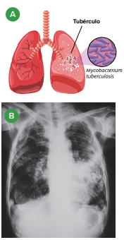
                                    <p class="img-credit">Sintomas da tuberculose. A. Representação esquemática dos pulmões de uma pessoa com tuberculose, indicando os tubérculos; B. Radiografia dos pulmões de uma pessoa com tuberculose, com pulmão esquerdo afetado.
                                    </p>
                                </div>
                                <!-- right -->
                                <div class="double-columned-content-right">
                                    <h3 class="titulo1">Tuberculose</h3>
                                    <p class="general-text"><b> • Agente causador:</b> bactéria aeróbica obrigatória Mycobacterium tuberculosis. Foi descoberta em 1882 pelo médico alemão Robert Koch (1843-1910) e ficou conhecida, também, como bacilo de Koch. Resistentes contra
                                        ao ressecamento, sobrevivem muito tempo no ar e na poeira. O bacilo de Koch é um exemplo de organismo oportunista, pois aproveita a imunidade baixa do organismo para se reproduzir e se instalar.
                                        <br>
                                        <b> • Transmissão: </b>contato com secreções respiratórias dos doentes, eliminadas por meio da tosse, que é um dos principais sintomas. Ao chegar aos alvéolos, as bactérias são englobadas por macrófagos e se reproduzem
                                        dentro dessas células. A morte dos macrófagos libera novas bactérias, que se espalham pelos pulmões e, em alguns casos, para outras partes do corpo (tuberculose extrapulmonar). <br>
                                        <b> • Sintomas:</b> emagrecimento, febre, dor no peito, fadiga, tosse intensa por mais de duas semanas; escarro sanguinolento (rompimento dos vasos sanguíneos). Se a doença não for tratada pode ocorrer a formação
                                        de tubérculos nos pulmões, que são vistos nos exames de raio X. Pessoas saudáveis geralmente são resistentes ao bacilo de Koch. <br>
                                        <b> • Tratamento:</b> é realizado com três antibióticos diferentes, para aumentar a chance de sucesso. O tratamento deve ser feito por seis meses, para a eliminação de todas as bactérias. O paciente não deve suspender
                                        o uso dos medicamentos antes do prazo, pois pode ocorrer a seleção de bactérias resistentes. <br>
                                        <b> • Profilaxia: </b> vacinação; evitar contato com pessoas doentes; pasteurização do leite, para matar a bactéria Mycobacterium bovis, que também pode causar doença no ser humano.</p>
                                </div>
                            </div>


                            <div class="titulo1-section">
                                
                                <h3 class="titulo1">Arqueas
                                </h3>
                            </div>
                            <p class="general-text">O domínio Archaea é formado por organismos arqueas, que compartilham algumas caraterísticas com bactérias, outras com eucariotos e têm, ainda, características exclusivas desse grupo. As paredes das arqueas possuem uma variedade
                                de polissacarídeos e proteínas, mas não possuem peptideoglicanos como as bactérias. Em sua membrana plasmática há lipídeos ramificados, diferentemente dos encontrados nos demais seres vivos. A reprodução ocorre apenas por
                                bipartição, e não são conhecidos mecanismos que permitam a transferência de material genético. Dessa forma, a variabilidade genética nas arqueas ocorre apenas por mutação.
                                <br> A maioria dos organismos desse grupo vive em ambientes extremos, com alta salinidade, baixa concentração de oxigênio, alta ou baixa temperatura, pH muito baixo (ácido) ou pH muito alto (alcalino), onde raros organismos
                                conseguem sobreviver. Por isso as arqueas são denominadas extremófilas (do grego phylos, que significa “afinidade”), como as halófilas e as termoacidófilas extremas. Há registro, no entanto, de arqueas vivendo em ambientes
                                com condições não adversas. <br> As arqueas halófilas (do grego halos e phylos, que significam, respectivamente, “sal” e “afinidade”) vivem em ambientes hipersalinos, com uma alta concentração de sais, como o Mar Morto
                                (Oriente Médio), o Grande Lago Salgado (Estados Unidos) e o Lago Hillier (Austrália). Esses organismos também podem ser encontrados em salinas, onde a água do mar é represada para obter o sal de cozinha. Algumas possuem
                                o pigmento bacteriorodopsina, o que deixa a água com uma cor rósea ou avermelhada. Esse pigmento é responsável pela absorção de luz solar para a produção de ATP, utilizado no metabolismo desses organismos.</p>

                            
                            <p class="img-credit">Vista aérea do Lago Hillier na Middle Island (Austrália), onde vivem arqueas halófilas que produzem pigmentos de cor rósea.</p>

                            <p class="general-text">As arqueas termoacidófilas (do grego termos e phylos, que significam, respectivamente, “calor” e “afinidade”) vivem em ambientes extremamente quentes e ácidos, como as fontes termais e fendas vulcânicas. A maioria das espécies
                                obtém energia a partir da oxidação de enxofre, sendo quimiossintetizantes. <br> Nas fontes quentes e sulfurosas do Parque Nacional de Yellowstone (Estados Unidos), onde a temperatura fica em torno de 70 °C e o pH em torno
                                de 2, vive a arquea do gênero Sufulobus. Em 1977 os cientistas descobriram, nas profundezas do oceano, as fontes termais submarinas onde existe uma comunidade de seres vivos sustentada por arqueas quimiossintetizantes.
                            </p>


                            
                            <p class="img-credit">Vista do Parque Nacional de Yelowstone (Estados Unidos), onde são encontradas arqueas termoacidófilas nas fontes termais.</p>
                            <p class="general-text">Há também as arqueas metanogênicas (do grego methos e genos, que significam, respectivamente, “vinho” e “origem”), produtoras do gás metano (CH4). Todas essas arqueas são anaeróbicas obrigatórias. Esses organismos utilizam
                                gás carbônico para oxidar o gás hidrogênio, liberando, como produto, gás metano e água, como na equação a seguir:</p>
                            
                            <p class="general-text">Muitas arqueas metanogênicas vivem em condições extremas, como nas camadas de gelo da Groenlândia e nas fontes hidrotermais submarinas. Outras, no entanto, vivem em locais mais moderados, como em pântanos e charcos anaeróbicos,
                                ou no sistema digestório de herbívoros, como bois, ovelhas e cupins. Os metanogênicos possuem aplicação importante, atuando como decompositores nas estações de tratamento de esgoto, nos aterros sanitários e nos biodigestores.
                            </p>


                            <!-- Predicting -->

                            <div class="flex-icon exercicios applying-knowledge">
                                 Aplicando conhecimentos
                            </div>

                            <div class="flex-exercicios">
                                <p class="exercicio-text"><b>1</b></p>
                                <p class="exercicio-text"> A figura a seguir representa uma célula procariótica.</p>
                            </div>
                            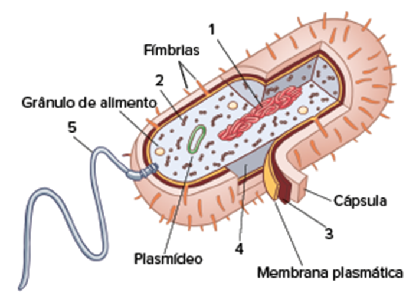
                            <ol class="questao-alternativas" type="a">
                                <li> Por que essa célula é procariótica?</li> <br><br>
                                <li> Cite o nome das estruturas indicadas pelos números de 1 a 5.</li>
                            </ol>


                            <div class="flex-exercicios">
                                <p class="exercicio-text"><b>2</b></p>
                                <p class="exercicio-text">Com relação à nutrição, as bactérias podem ser divididas em três grupos principais: fotoautotróficas, quimioautotróficas e heterotróficas. Preencha o quadro comparativo indicando corretamente a fonte de energia e de carbono
                                    para cada uma das categorias nutricionais das bactérias.
                                </p>
                            </div>
                            
                            <div class="flex-exercicios">
                                <p class="exercicio-text"><b>3</b></p>
                                <p class="exercicio-text">As bactérias são muito bem-sucedidas no planeta, dentre outros fatores, pela sua capacidade de reprodução extremamente rápida em ambiente favorável. Em ambiente desfavorável, muitas bactérias podem formar esporos de resistência.
                                </p>
                            </div>
                            <ol class="quetao-alternativas" type="a">
                                <li> Qual é o principal tipo de reprodução das bactérias?</li>
                                <br><br>
                                <li> O que é um esporo bacteriano?</li> <br><br>
                            </ol>

                            <div class="flex-exercicios">
                                <p class="exercicio-text"><b>4</b></p>
                                <p class="exercicio-text">As bactérias são muitas vezes lembradas como organismos nocivos e perigosos, pois são responáveis por várias doenças no ser humano. Vale a pena ressaltar, entretanto, que existem poucas espécies de bactérias nocivas para
                                    a humanidade. De uma forma geral, as bactérias são fundamentais para a humanidade e para a manutenção da vida em nosso planeta.
                                </p>
                            </div>
                            <ol class="questao-alternativas" type="a">
                                <li>Cite cinco doenças humanas causadas por bactérias</li>
                                <li> Cite dois benefícios das bactérias para o ambiente.</li>
                            </ol>

                            <div class="flex-exercicios">
                                <p class="exercicio-text"><b>5</b></p>
                                <p class="exercicio-text">Sobre cólera e sífilis, responda:</p>
                            </div>

                            <ol class="questao-alternativas" type="a">
                                <li> Como ocorre a transmissão dessas doenças?</li> <br><br>
                                <li> Que medidas profiláticas devem ser tomadas para o controle dessas bacterioses?</li>
                            </ol>


                            <div class="flex-exercicios">
                                <p class="exercicio-text"><b>6</b></p>
                                <p class="exercicio text"><b> UFRGS-RS 2018</b> A partir da década de 90, foi proposta a classificação dos seres vivos em 3 domínios: Archaea, Bacteria e Eukarya. Sobre esses seres vivos, considere o quadro abaixo.</p>
                            </div>
                            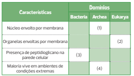
                            <p class="exercicio-text">Assinale a alternativa que, completando o quadro, contém a sequência de palavras que substitui corretamente os números de <b> 1</b> a <b> 4</b>, de acordo com algumas das principais características de cada um desses grandes
                                grupos
                            </p>
                            <ol class="questao-alternativas" type="a">
                                <li> ausente – ausentes – sim – sim</li>
                                <li> ausente – presentes – sim – sim </li>
                                <li> ausente – ausentes – sim – não </li>
                                <li> presente – presentes – não – sim</li>
                                <li> presente – ausentes – não – não</li>
                            </ol>


                            <div class='consolidando-saberes'>
                                CONSOLIDANDO SABERES
                            </div>


                            <div class="flex-exercicios">
                                <p class="exercicio-text"><b>1</b></p>
                                <p class="exercicio-text"><b>Unifesp</b> No fim de abril, ao anunciar onde a duquesa de Cambridge, Kate Middleton, daria à luz sua filha, herdeira do príncipe William, a imprensa mundial noticiou que uma ala do Hospital de St. Mary, em Londres,
                                    havia sido fechada em decorrência de um pequeno surto de superbactéria. Se uma instituição frequentada por um casal real pode passar por uma situação como essa, dá para ter noção do desafio enfrentado diariamente por
                                    profissionais do mundo inteiro para lidar com micro-organismos multirresistentes.</p>
                            </div>
                            <p class="quote-source">(http://noticias.uol.com.br. Adaptado.)
                            </p>
                            <ol class="questao-alternativas" type="a">
                                <li> Tendo por base a biologia evolutiva, explique como uma colônia de bactérias pode dar origem a uma nova linhagem resistente ao antibiótico que até então era eficiente em combatê-la.
                                </li>
                                <li> Na reprodução das bactérias, o processo que leva à formação de novas células assemelha-se mais à meiose ou à mitose? Justifique sua resposta.</li>

                            </ol>

                            <div class="flex-exercicios">
                                <p class="exercicio-text"><b>2</b></p>
                                <p class="exercicio-text"><b>Famerp-SP 2018</b> Os domínios Archaea e Bacteria englobam micro-organismos com características morfológicas bem definidas. Estes seres vivos compartilham semelhanças entre si, tais como</p>
                            </div>
                            <ol class="questao-alternativas" type="a">
                                <li> membrana plasmática e organelas membranosas.</li>
                                <li>inclusões citoplasmáticas e envoltório nuclear.</li>
                                <li>moléculas de DNA lineares e plasmídeos.</li>
                                <li>material genético disperso e ribossomos.</li>
                                <li>citoesqueleto e parede com peptideoglicano.</li>
                            </ol>


                            <div class="flex-exercicios">
                                <p class="exercicio-text"><b>3</b></p>
                                <p class="exercicio-text"><b>UEPG-PR 2017</b> Analisando-se as características e peculiaridades dos procariontes e eucariontes, assinale o que for correto. <br>
                                    <b> 01.</b> Os procariontes, principalmente as bactérias, são sempre nocivas aos demais seres, ora causando doenças, ora vivendo em mutualismo com os outros organismos. <br>
                                    <b> 02. </b>Acredita-se que a célula eucariota tenha surgido da procariota. Por exemplo, as mitocôndrias e os cloroplastos surgiram de bactérias que invadiram as células primitivas e passaram a viver em seu interior.
                                    <br>
                                    <b> 04. </b>A célula eucariota é menor que a procariota, apresentando em seu citoplasma o material genético livre de envoltório e organelas responsáveis pela síntese proteica. <br>
                                    <b> 08.</b> A célula procariota apresenta DNA organizado em pequenos cromossomos protegidos por uma fina membrana. No citoplasma são encontrados ribossomos, responsáveis pela geração de energia na célula.
                                    <br>
                                    <b> 16.</b> Os procariontes são fundamentais para a manutenção da vida, pois algumas espécies atuam como decompositoras, outras são fotossintetizantes, quimiossintetizantes, além de poderem também participar de processos
                                    de fermentação.
                                </p>
                            </div>
                            <div class="align-horizontal ml margin-top-1">
                                <b>Soma:</b> <span class="fake-input-model"></span>
                            </div>

                            <div class="flex-exercicios">
                                <p class="exercicio-text"><b>4</b></p>
                                <p class="exercicio-text"><b> FMP-RJ 2017</b> A leptospirose é uma doença infecciosa influenciada tanto por características ambientais quanto sociais. As favelas são áreas em que o risco de contrair essa infecção é elevado, porque estão sujeitas
                                    a alagamentos, e os moradores não têm acesso a saneamento básico. O risco também é maior para indivíduos que trabalham com coleta de lixo ou na construção civil, uma vez que estão mais expostos à lama, ao solo e a outros
                                    materiais contaminados. A infecção descrita no texto é causada por</p>
                            </div>
                            <ol class="questao-alternativas" type="a">
                                <li>larvas infectantes de asquelmintos que sobrevivem no solo úmido e na água.</li>
                                <li>esporos de basidomicetos presentes nas fezes de ratos, pombos e morcegos.</li>
                                <li> vírus adquiridos quando o indivíduo não vacinado entra em áreas de transmissão.</li>
                                <li>bactérias espiroquetas que se multiplicam nos rins de roedores e de outros mamíferos.</li>
                                <li>protozoários flagelados, eliminados junto com a urina de ratos, cães e de outros animais.</li>
                            </ol>


                            <div class="flex-exercicios">
                                <p class="exercicio-text"><b>5</b></p>
                                <p class="exercicio-text"><b> Fuvest-SP 2018</b> O botulismo provocou a morte de 1,1 mil cabeças de gado, no último mês de agosto, numa fazenda em Mato Grosso do Sul. A suspeita clínica inicial foi confirmada pelo exame das amostras de grãos úmidos
                                    de milho fornecidos aos animais, demonstrando a presença da toxina botulínica, que é produzida pela bactéria Clostridium botulinum. Considerando que a toxina botulínica bloqueia a transmissão neuromuscular, a morte
                                    dos animais deve ter sido decorrente de </p>
                            </div>
                            <ol class="questao-alternativas" type="a">
                                <li>infecção generalizada.</li>
                                <li>hemorragia interna.</li>
                                <li> desidratação provocada por diarreia</li>
                                <li> acidente vascular cerebral.</li>
                                <li>parada respiratória.</li>
                            </ol>

                            <div class="flex-exercicios">
                                <p class="exercicio-text"><b>6</b></p>
                                <p class="exercicio-text"><b> Unicamp-SP 2018</b> Em 2016, a Organização Mundial da Saúde (OMS) apresentou novas diretrizes para o tratamento de três doenças sexualmente transmissíveis: sífilis, gonorreia e clamidíase. As três doenças citadas são
                                    causadas por
                                </p>
                            </div>
                            <ol class="questao-alternativas" type="a">
                                <li>microrganismos (bactérias ou vírus), que passaram dos macacos para o ser humano há muitos anos, levando ao surgimento de epidemias e pandemias.</li>
                                <li>bactérias, que podem se tornar resistentes a antibióticos, se utilizados em excesso ou de forma inapropriada, dificultando o tratamento.</li>
                                <li>bactérias, que podem ser tratadas e eliminadas pelo uso diligente de preservativos (masculinos ou femininos) durante as relações sexuais.</li>
                                <li>protozoários, que podem ser tratados e eliminados pelo uso diligente de preservativos (masculinos ou femininos) durante as relações sexuais.</li>
                            </ol>


                    </div>

                </div>


            </div>


        </div>

        <!-- fim -->
        </div>
        </div>
        </div>
    </main>
</body>

</html>